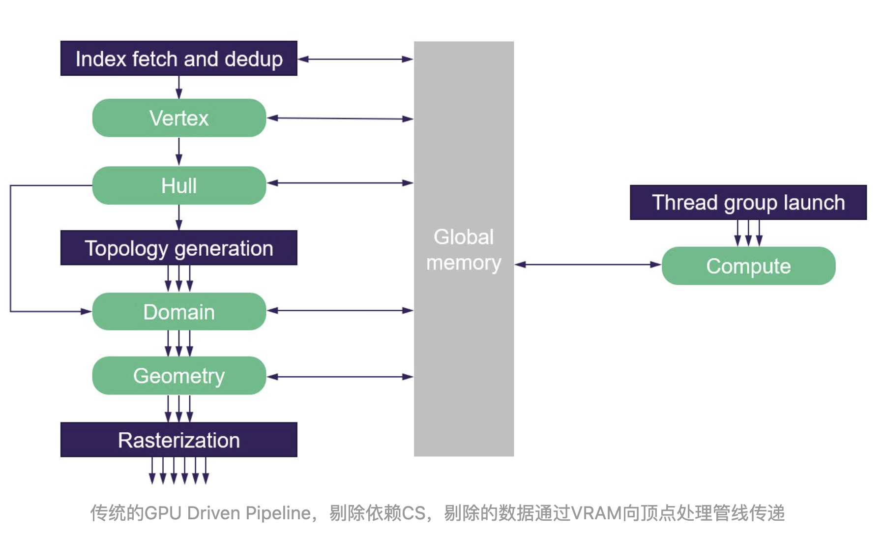

# Nanite


基于 Mesh Shader 的 Pipeline，Cluster 剔除成为了顶点处理阶段的一部分，减少没必要的 Vertex Buffer Load/Store
Nanite 把实现分成两个过程三个部分: 预处理过程：在模型导入或者在引擎中修改模型设置时处理，把高模预处理成一簇簇的三角形簇，建立分层分页结构用于渲染和加载

把模型分成 Cluster, 类似 Meshshader 中的 Meshlet。划分在拓扑空间中邻近的 Cluster，是为了提高访问数据时 Cache 命中率。Cluster 分割使用 Metis 库把模型的顶点数据进一步切分为更细粒度的 Cluster（或者叫做 Meshlet），让每个 Cluster 的粒度能够更好地适应 Vertex Processing 阶段的 Cache 大小，并以 Cluster 为单位进行各类剔除（Frustum Culling，Occulsion Culling，Backface Culling）已经逐渐成为了复杂场景优化的最佳实践，
# Primtive 数据
Nanite 资源的 Primitive 数据都使用 StructureBuffer 存在于 GPU Memory 中，这就为后续的剔除、合批等操作提供了 GPU Driven 式的便利。
# Cull
Nanite 的 Cull 在是 GPU Driven 的，在 CS 中执行的，它分为两大块： 一是 Primitive Instance 级，为每个模型执行 FrustumCull/HZB Cull 二是内部 BVH 树及 Cluster 级，分层的为 BVH 进行剔除，在一直相交的情形下会下降到 Cluster Boundary，注意到目前的 Nanite Cluster 剔除并没有剔除面积很小的三角形，也没有做背面剔除。 Cull 的同时它还会做一件事：标记该三角形走软件光栅化还是走硬件光栅化 —— 只有面积小于给定值的三角形才会走软件光栅化
# 光栅化 (Rasterization)
在剔除结束之后，每个 Cluster 会根据其屏幕空间的大小送至不同的光栅器，大三角形和非 Nanite Mesh 仍然基于硬件光栅化，小三角形基于 Compute Shader 写成的软光栅化。Nanite 的 Visibility Buffer 为一张 R32G32_UINT 的贴图 (8 Bytes/Pixel)，其中 R 通道的 0~6 bit 存储 Triangle ID，7~31 bit 存储 Cluster ID，G 通道存储 32 bit 深度。
整个软光栅化的逻辑比较简单：基于扫描线算法，每个 Cluster 启动一个单独的 Compute Shader，在 Compute Shader 初始阶段计算并缓存所有 Clip Space Vertex Position 到 shared memory，而后 CS 中的每个线程读取对应三角形的 Index Buffer 和变换后的 Vertex Position，根据 Vertex Position 计算出三角形的边，执行背面剔除和小三角形（小于一个像素）剔除，然后利用原子操作完成 Z-Test，并将数据写进 Visibility Buffer。
# 软光栅化是否有机会打败硬光栅化？
传统光栅化硬件设计之初，设想的输入三角形大小是远大于一个像素的。基于这样的设想，硬件光栅化的过程通常是层次式的。以 N 卡的光栅器为例，一个三角形通常会经历两个阶段的光栅化：Coarse Raster 和 Fine Raster，前者以一个三角形作为输入，以 8x8 像素为一个块，将三角形光栅化为若干块（你也可以理解成在尺寸为原始 FrameBuffer 1/8*1/8 大小的 FrameBuffer 上做了一次粗光栅化）。在这个阶段，借由低分辨率的 Z-Buffer，被遮挡的块会被整个剔除，N 卡上称之为 Z Cull；在 Coarse Raster 之后，通过 Z Cull 的块会被送到下一阶段做 Fine Raster，最终生成用于着色计算的像素。在 Fine Raster 阶段，有我们熟悉的 Early Z。由于 mip-map 采样的计算需要，我们必须知道每个像素相邻像素的信息，并利用采样 UV 的差分作为 mip-map 采样层级的计算依据。为此，Fine Raster 最终输出的并不是一个个像素，而是 2x2 的小像素块（Pixel Quad）。
对于接近像素大小的三角形来说，硬件光栅化的浪费就很明显了：首先，Coarse Raster 阶段几乎是无用的，因为这些三角形通常都是小于 8x8 的，对于那些狭长的三角形，这种情况更糟糕，因为一个三角形往往横跨多个块，而 Coarse Raster 不但无法剔除这些块，还会增加额外的计算负担；另外，对于大三角形来说，基于 Pixel Quad 的 Fine Raster 阶段只会在三角形边缘生成少量无用的像素，相较于整个三角形的面积，这只是很少的一部分；但对于小三角形来说，Pixel Quad 最坏会生成四倍于三角形面积的像素数，并且这些像素也包含在 pixel shader 的执行阶段，使得 warp 中有效的像素大大减少。

每次渲染小三角形会形成很多像素的浪费在像素级小三角形这一特定前提下，软光栅化（基于 Compute Shader）的确有机会打败硬光栅化。这也正是 Nanite 的核心优化之一，这一优化使得 UE5 在小三角形光栅化的效率上提升了 3 倍。
# UE5 nanite 流程
它的核心思想可以简单拆解为两大部分：顶点处理的优化和像素处理的优化。其中顶点处理的优化主要是 GPU Driven Pipeline 的思想；像素处理的优化，是在 Visibility Buffer 思想的基础上，结合软光栅化完成的

每个 Nanite Mesh 在预处理阶段，会被切成若干 Cluster，每个 Cluster 包含 128 个三角形，其实是一个图的切分（graph partition）。整个 Mesh 以 BVH（Bounding Volume Hierarchy）的形式组织成树状结构，每个叶节点代表一个 Cluster。剔除分两步，包含了视锥剔除和基于 HZB 的遮挡剔除。其中 Instance Cull 以 Mesh 为单位，通过 Instance Cull 的 Mesh 会将其 BVH 的根节点送到 Persistent Cull 阶段进行层次式的剔除
# 如何把 Persistent Cull 阶段的剔除任务数量映射到 Compute Shader 的线程数量？
最简单的方法是给每棵 BVH 树一个单独的线程，也就是一个线程负责一个 Nanite Mesh。但由于每个 Mesh 的复杂度不同，其 BVH 树的节点数、深度差异很大，这样的安排会导致每个线程的任务处理时长大不相同，线程间互相等待，最终导致并行性很差；那么能否给每个需要处理的 BVH 节点分配一个单独的线程呢？这当然是最理想的情形，但实际上我们无法在剔除前预先知道会有多少个 BVH 节点被处理，因为整个剔除是层次式的、动态的。Nanite 解决这个问题的思路是：设置固定数量的线程，每个线程通过一个全局的 FIFO 任务队列去取 BVH 节点进行剔除，若该节点通过了剔除，则把该节点的所有子节点也放进任务队列尾部，然后继续循环从全局队列中取新的节点，直到整个队列为空且不再产生新的节点

# Emit Targets
为了保证数据结构尽量紧凑，减少读写带宽，所有软光栅化需要的数据都存进了一张 Visibility Buffer，但是为了与场景中基于硬件光栅化生成的像素混合，我们最终还是需要将 Visibility Buffer 中的额外信息写入到统一的 Depth/Stencil Buffer 以及 Motion Vector Buffer 当中。这个阶段通常由几个全屏 Pass 组成
# （1）Emit Scene Depth/Stencil/Nanite Mask/Velocity Buffer
这一步根据最终场景需要的 RenderTarget 数据，最多输出四个 Buffer，其中 Nanite Mask 用 0/1 表示当前像素是普通 Mesh 还是 Nanite Mesh（根据 Visibility Buffer 对应位置的 ClusterID 得到），对于 Nanite Mesh Pixel，将 Visibility Buffer 中的 Depth 由 UINT 转为 float 写入 Scene Depth Buffer，并根据 Nanite Mesh 是否接受贴花，将贴花对应的 Stencil Value 写入 Scene Stencil Buffer，并根据上一帧位置计算当前像素的 Motion Vector 写入 Velocity Buffer，非 Nanite Mesh 则直接 discard 跳过。
（2）Emit Material Depth
这一步将生成一张 Material ID Buffer，稍有不同的是，它并未存储在一张 UINT 类型的贴图，而是将 UINT 类型的 Material ID 转为 float 存储在一张格式为 D32S8 的 Depth/Stencil Target 上（稍后我们会解释这么做的理由），理论上最多支持 2^32 种材质（实际上只有 14 bits 用于存储 Material ID），而 Nanite Mask 会被写入 Stencil Buffer 中。
# Classify Materials && Emit G-Buffer
Nanite 的材质 Shader 是在 Screen Space 执行的，Nanite 在 Base Pass 绘制阶段并不是每种材质一个全屏 Pass，而是将屏幕空间分成若干 8x8 的块，比如屏幕大小为 800x600，则每种材质绘制时生成 100x75 个块，每块对应屏幕位置。为了能够整块地剔除，在 Emit Targets 之后，Nanite 会启动一个 CS 用于统计每个块内包含的 Material ID 的种类。由于 Material ID 对应的 Depth 值预先是经过排序的，所以这个 CS 会统计每个 8x8 的块内 Material Depth 的最大最小值作为 Material ID Range 存储在一张 R32G32_UINT 的贴图中

有了这张图之后，每种材质在其 VS 阶段，都会根据自身块的位置去采样这张贴图对应位置的 Material ID Range，若当前材质的 Material ID 处于 Range 内，则继续执行材质的 PS；否则表示当前块内没有像素使用该材质，则整块可以剔除，此时只需将 VS 的顶点位置设置为 NaN，GPU 就会将对应的三角形剔除。由于通常一个块内的材质种类不会太多，这种方法可以有效地减少不必要的 overdraw。实际上通过分块分类减少材质分支
整个 Base Pass 分为两部分，首先绘制非 Nanite Mesh 的 G-Buffer，这部分仍然在 Object Space 执行，和 UE4 的逻辑一致；之后按照上述流程绘制 Nanite Mesh 的 G-Buffer，其中材质需要的额外 VS 信息（UV，Normal，Vertex Color 等）通过像素的 Cluster ID 和 Triangle ID 索引到相应的 Vertex Position，并变换到 Clip Space，根据 Clip Space Vertex Position 和当前像素的深度值求出当前像素的重心坐标以及 Clip Space Position 的梯度（DDX/DDY），将重心坐标和梯度代入各类 Vertex Attributes 中插值即可得到所有的 Vertex Attributes 及其梯度（梯度可用于计算采样的 Mip Map 层级）。

Epic 王祢：详解虚幻引擎 5 核心技术 Nanite
Nanite LOD
我们把 LOD 0 的 Mesh 拿过来，生成了一组 LOD 0 的 Cluster，那这组 Cluster 我们会再用 graph partition 的条件，把一组 Cluster，比如 64 个、32 个或者更少的 Cluster 合并成一个 Cluster Group。背后的条件也是一样的，面积尽可能均匀、边界尽可能少，在减面的时候，其实是在这个 Group 里进行。我先简单举例，如右图所示（实际划分不止是 4 个），比如现在有一些 Cluster、假设它只有 4 个面，我把这 4 个 Cluster 并成了一个 Group，这是 LOD 0 的。那我要降一级 LOD 的时候怎么做呢？我先把这些 Cluster 的边界全解开，把一个 Group 看成一个大的 Cluster，这时我锁住这个 Cluster 的边界，去对半地减面。之后再以 128 个面分成一个 Cluster 时，它 Cluster 的数量刚好也是减半，就变成了两个 Cluster，所以生成了新的 Cluster Group 里减完面的就是两个 Cluster。大家可以看到，这两个 Cluster 除了 Group 的外边界跟上面保持一致，内部的边界其实是没有关系的。